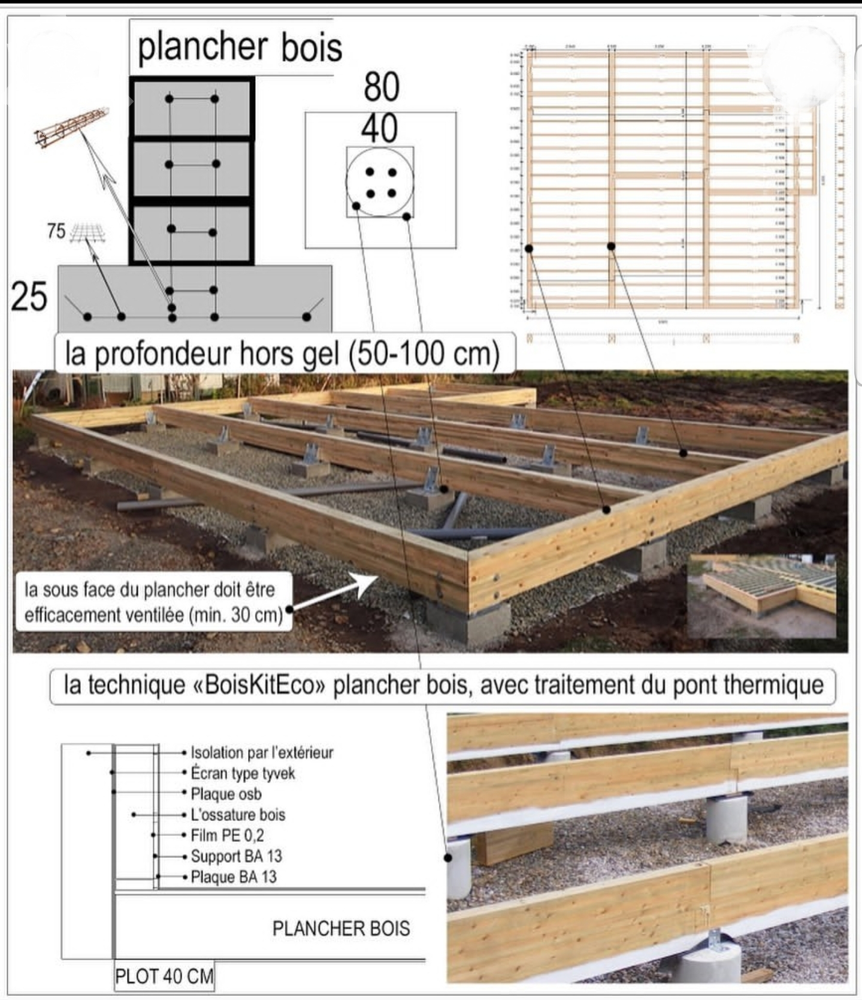
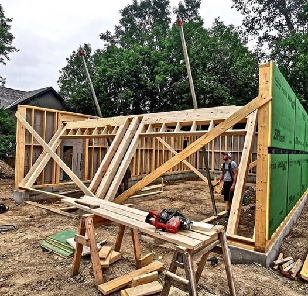

Le Système GlamHouse
Préfabrication en atelier, assemblage éclair sur site.
Chaque maison naît dans nos ateliers français avant de rejoindre votre terrain déjà presque finie — la précision d'usine, la chaleur du bois.
Rapidité et Propreté
Nos modules sont assemblés très rapidement sur place car l'essentiel de la fabrication est réalisé dans nos ateliers français. Résultat : une installation rapide, propre, sans les nuisances d'un chantier traditionnel.
Nous utilisons des matériaux certifiés ÉCOLABEL. Nos constructions à ossature bois et blocs de chanvre offrent une isolation naturelle exceptionnelle.



Les 8 Étapes de Construction
De la commande à la remise des clés, étape par étape
1. Signature & Personnalisation
Signature du contrat. Versement acompte (30%). Étude personnalisée avec architecte. Validation des plans et des finitions par le client. Demande de permis si la surface dépasse 20m². ?Pour les modules < 20m² : simple déclaration préalable en mairie (délai 1 mois). Pour > 20m² : permis de construire (délai 2-3 mois).
2. Préfabrication en Atelier
Découpe CNC de l'ossature bois sur mesure. Assemblage des panneaux structurels en atelier certifié. Préparation des blocs de chanvre pour l'isolation. Pré-câblage électrique intégré. Menuiseries (fenêtres, portes) posées en atelier pour garantir l'étanchéité. Contrôle qualité rigoureux à chaque étape.
3. Préparation du Terrain
Terrassement si nécessaire. Pose des fondations selon le choix : plots béton (économique), dalle complète (standard), ou vide sanitaire (premium). Raccordements réseaux (eau, électricité, assainissement). Vérification du nivellement au laser.
4. Livraison & Assemblage
Transport des modules par camion. Assemblage sur site en 2-5 jours selon le modèle. Mise en place par grue. Étanchéité et jointure des modules. Fixation définitive sur les fondations. C'est l'étape spectaculaire : votre maison prend forme en quelques jours.
5. Mise Hors d'Eau / Hors d'Air
Toiture posée et étanchéifiée. Menuiseries extérieures finalisées. Isolation extérieure en blocs de chanvre. Bardage et revêtement de façade (bois, composite ou enduit selon choix). Test d'étanchéité à l'air (blower door test). ?Le blower door test mesure l'étanchéité à l'air du bâtiment. Nos maisons atteignent systématiquement les niveaux requis par la RE2020, garantissant zéro déperdition d'énergie.
6. Second Œuvre
Installation électrique complète (tableau, prises, luminaires). Plomberie et sanitaires. Système de chauffage/climatisation : pompe à chaleur air-air réversible. Pose du placo et des cloisons intérieures. Isolation phonique inter-pièces.
7. Finitions & Aménagement
Peinture intérieure (peinture naturelle sans COV). Pose revêtement de sol : parquet chêne massif ou carrelage grès cérame. Cuisine équipée installée. Salle de bain complète (douche italienne, vasque design). Luminaires et interrupteurs design. Terrasse/balcon finalisé.
8. Contrôle Final & Remise des Clés
Contrôle qualité final complet. Test de tous les équipements (électricité, plomberie, chauffage). DPE (Diagnostic de Performance Énergétique) officiel — classe A garanti. Nettoyage complet de la maison. Réception avec le client et PV de réception. Remise des clés + dossier complet (garanties, plans, notices). Activation de la garantie décennale.
Structure
Assemblage de la charpente, étanchéité et menuiserie.
Isolation
Isolation extérieure thermique/phonique et bardage OSB Classé M3.
Équipement
Électricité, plomberie, cuisine, sanitaires et climatisation.
Finitions
Finitions intérieures et remise des clés (1,5 à 4 mois selon le modèle).